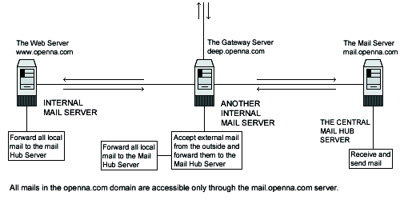

| Securing and Optimizing Linux: RedHat Edition -A Hands on Guide | ||
|---|---|---|
| Prev | Chapter 22. Software -Server/Mail Network | Next |
In our configuration and installation we'll provide you two different configurations that you can set up for Sendmail;
The Central Mail Hub Relay Server configuration will be used for your server where the assigned task is to send, receive and relay all mail for all local or neighbor client and server mail machines you may have on your network.
A local or neighbor client and server refer to all other local server or client machines on your network that run Sendmail and send all outgoing mail to the Central Mail Hub for future delivery. This kind of internal client never receives mail directly via the Internet; Instead, all mail from the Internet for those computers is kept on the Mail Hub server.
You can configure the neighbor Sendmail so that it accepts only mail that is generated locally, thus insulating neighbor machines for easier security. The Gateway server outside the firewall, or part of it acts as a proxy and accepts external mail via its Firewall rules file that is destined for internal delivery from the outside, and forwards it to the Central Mail Hub Server. Also note that the Gateway server is configured like a neighbor Sendmail server to never accept incoming mail from the outside the Internet.
Here is a graphical representation of the Sendmail configuration used in this book, with different settings:
Central Mail Hub Relay,
local or neighbor client and servers on different servers.

These installation instructions assume
Commands are Unix-compatible.
The source path is /var/tmp, other paths are possible.
Installations were tested on Red Hat Linux 6.1 and 6.2.
All steps in the installation will happen in super-user account root.
Sendmail version number is 8.10.1
These are the package(s) you need to download and they are available here
| Sendmail Homepage: http://www.sendmail.org/ |
| Sendmail FTP Sire: 204.152.184.34 |
| You must be sure to download: sendmail.8.10.1.tar.gz |
Before you decompress the tarballs, it is a good idea to make a list of files on the system before you install Sendmail, and one afterwards, and then compare them using diff to find out what file it placed where. Simply run find /* > Sendmail1 before and find /* > Sendmail2 after you install the software, and use diff Sendmail1 Sendmail2 > Sendmail-Installed to get a list of what changed.
You need to compile, so decompress the tarball (tar.gz). which you have downloaded:d
[root@deep] /# cp sendmail.version.tar.gz /var/tmp
[root@deep] /# cd /var/tmp
[root@deep ]/tmp# tar xzpf sendmail.version.tar.gz
|
Before you compile it is always better to configure to your needs, move into the new Sendmail directory and edit the smrsh.c file vi +77 smrsh/smrsh.c and change the line:
# define CMDDIR "/usr/adm/sm.bin"
|
# define CMDDIR "/etc/smrsh"
|